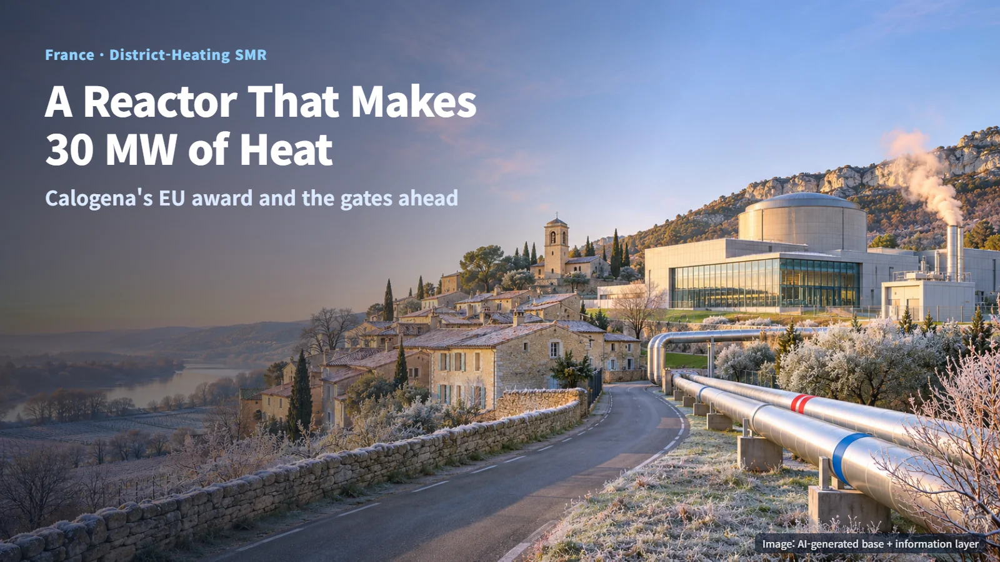
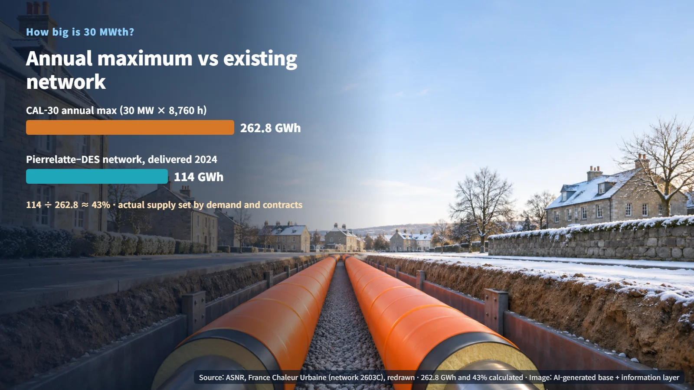
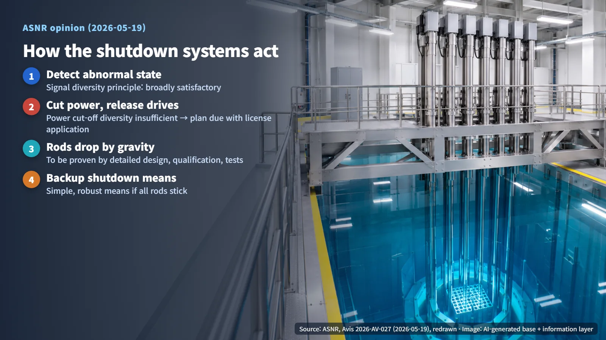
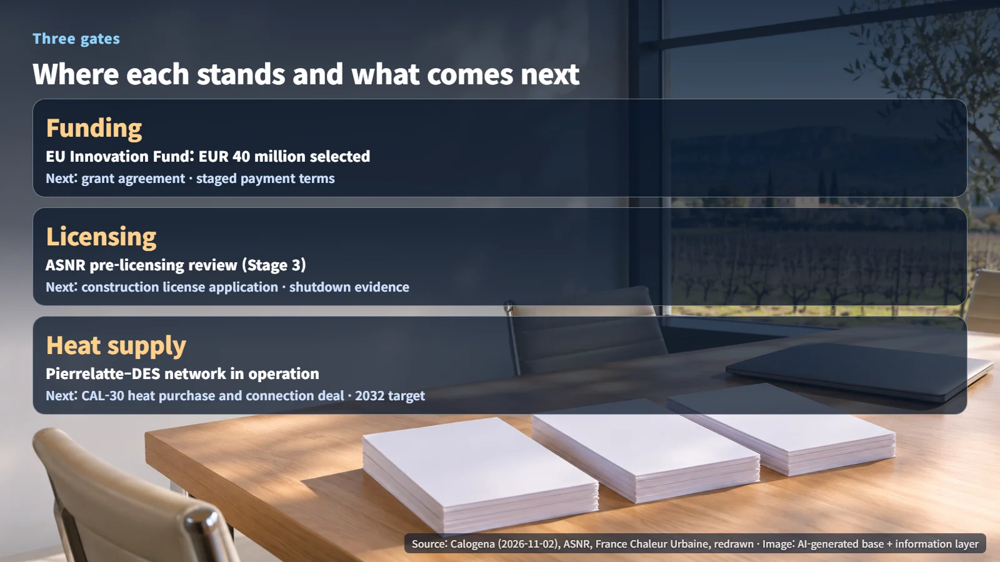

France · District Heating · SMR
A Reactor That Makes 30 MW of Heat for District Heating: Calogena's €40 Million EU Award and the Gates Ahead
Calogena's CAL-30 was selected for €40 million from the EU Innovation Fund. Funding, licensing and a heat supply deal are the three gates ahead.
When most people picture a nuclear reactor, they imagine a large power station feeding high-voltage lines. In France, one company is preparing a much smaller reactor with a different job: producing heat for a local district heating network. The company is Calogena, and it has just announced that its project was selected for €40 million in European Union funding. That raises two natural questions: does this mean construction is about to start, and how big is a 30 MW heat reactor, really? The answer runs through three gates — funding, licensing and a heat supply contract — so let's walk through them in order.

Where the €40 Million Stands Today
In a press release dated November 2, Calogena announced that the project to build its first commercial reactor in Pierrelatte, France, was selected for a €40 million grant from the EU Innovation Fund. Selection is the current stage. The next steps are signing an individual grant agreement and receiving payments. The agreement terms and payment status have not been made public. The company's earlier France 2030 support of more than €50 million comes from a separate funding source.
According to the European Commission, regular Innovation Fund grants cover up to 60% of relevant costs, calculated under the method set out for each call. If we assume that ceiling applies in full, €40 million ÷ 0.6 works out to relevant costs of about €66.7 million or more. Treat this figure as an assumption that helps gauge the weight of the grant; the actual funding rate and cost structure are set in the individual agreement. The Commission also explains that up to 40% of a grant can be paid before a project is fully operational, once defined milestones are met. The key thing to watch, then, is which milestone-based payment conditions end up in Calogena's agreement.
How Much Heat Is 30 MWth?
France's nuclear safety and radiation protection authority, ASNR, describes CAL-30 as a light-water-moderated and -cooled reactor with a thermal output of 30 MW. In plain terms, ordinary water slows down the neutrons and also carries the heat away, and the design is being developed as a low-temperature, low-pressure pool-type reactor.
The units matter here. MWth measures the heat a reactor produces; MWe measures the electricity a generator delivers after that heat has been used to spin a turbine. A power plant loses a large share of its heat in that conversion. CAL-30 is designed to send the heat it makes straight into a district heating network.
To put the scale in numbers, assume the reactor runs at full output for all 8,760 hours of a year. Then 30 MW × 8,760 hours works out to an upper limit of 262.8 GWh per year. French government data (France Chaleur Urbaine) show that the existing Pierrelatte–DES heat network delivered 114 GWh of heat to 25 delivery points in 2024. Dividing 114 by 262.8 gives about 43%. In other words, the network today uses a little under half of the reactor's maximum annual heat output. These two numbers are a comparison for a sense of scale; actual supply will be set by heat demand and contracts. The company has put forward supplying about 20,000 households as its target scale.

What the Regulator Asked of the Shutdown Systems
The first safety function of any reactor is to stop reliably when needed. CAL-30 has a main shutdown system and a diversified shutdown system. Both drop bundles of neutron-absorbing rods into the core by gravity, making it subcritical — a state in which the chain reaction dies away on its own. When the mechanism holding the rods releases, they fall under their own weight.
In an opinion dated May 19, 2026, ASNR reviewed the sequence: abnormal condition detected → rod drive mechanisms released → rods fall by gravity. It found the diversity principles for the signals and drive mechanism designs broadly satisfactory. It also found that the power-cutoff devices for the drive mechanisms of the two systems lacked sufficient diversity, and asked Calogena to present diversification measures when it applies for the facility's construction license.
The core concept here is common-cause failure. Even with two separate systems, if both rely on the same type of device, a single cause can take both out at once. Picture two alarm bells hanging from the same single wire.

ASNR's position has two layers. It accepted a design principle without functional diversity in the moving parts, while asking that it be backed up with detailed design, equipment qualification and test data. In particular, it asked for a representative test program showing that the systems work even in conditions such as an extreme earthquake or an aircraft crash. ASNR also noted that the possibility of all the absorber rods jamming mechanically is difficult to rule out completely. It asked for a simple, robust alternative means of shutdown, along with analysis showing that the chain reaction can be stopped before fuel damage even if an accident coincides with all the rods sticking. The regulator has now given its opinion on the design principles; the next step is to demonstrate them through detailed design and testing.
The Contract With the Heat Buyer, and the 2032 Target
ASNR's project status table places Calogena at the pre-licensing review stage (Stage 3). World Nuclear News (WNN) reported that CAL-30 is one of four SMR designs ASNR is evaluating. The scope and timing of a facility license application for Pierrelatte have not been made public.
The starting point for heat supply is a network that already operates. The Pierrelatte–DES network is registered with SMARD as project owner and DROME ENERGIE SERVICES (CORIANCE) as operator. For CAL-30's heat to flow into this network, a heat purchase and connection contract will be needed, and its supply terms have not yet been disclosed.
Put together, the project has three paths to travel. Funding moves from selection to agreement and payment. Licensing moves from pre-licensing review to a facility construction license application. Heat supply moves from an existing network in operation to a contract with the reactor. The company's documents set 2032 as the target for first deployment. (The WNN article still carries wording about deployment from 2030; this post follows the company's documents.) This selection opens the first gate, and reaching the 2032 target means clearing the other two as well.

Heating reactors were also part of the picture in our November 5 post on Helsinki's SMR plans. Measured by how much of a town's winter it can keep warm, a 30 MW reactor becomes a far more tangible number.